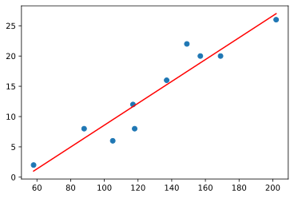

Modelo de regressão linear simples¶
Vamos implementar um modelo de regressão linear simples em python
Modelo¶
\[ \begin{equation}
\tag{1}
Y = β_0 + β1X + ε
\end{equation}\]
β0 : intercepto
β1 : coeficiente angular
X: v. independente, preditora, regressora, explanatória, covariável, feature
Y: dependente, resposta
ε : variável aleatória da diferença entre o valor observado de y e a reta \((β_0 + β1X)\), erro estatístico
Como a equação dada envolve apenas uma variavel regressora, é chamada de regressão linear simples
Notação¶
\[\overline{X} = \frac{\sum_{i=1}^n X_i}{n}; \overline{Y} = \frac{\sum_{i=1}^n Y_i}{n}\]
\[S_{XX} = \sum_{i=1}^n (X_i - \overline X)^2 = \sum_{i=1}^n X_i^2 - n\overline{X}^2\]
\[S_{YY} = \sum_{i=1}^n (Y_i - \overline Y)^2 = \sum_{i=1}^n Y_i^2 - n\overline{Y}^2\]
\[S_{XY} = \sum_{i=1}^n (X_i - \overline X) (Y_i - \overline Y) = \sum_{i=1}^n (X_i Y_i) - n \overline{XY} = \sum_{i=1}^n (X_i - \overline X) Y_i\]
O metodo dos mínimos quadrados consiste em minimizar a soma dos quadrados dos resíduos:
Derivando com relação a \(β_0\) e \(β_1\) e igualando a zero encontramos o ponto de minimo:
\[\hat{β_1} = \frac{S_{XY}}{S_{XX}}\]
\[\hat{β_0} = \overline Y − \hat β_1X\]
Implementando em python¶
[7]:
import numpy as np
import matplotlib.pyplot as plt
from sklearn.linear_model import LinearRegression
[23]:
def least_squares2(X,Y):
'''
X: Vetor com valores de x
Y: Vetor com valores de y
Retorna os coeficientes m e b da equação
'''
#Valores para facilitar
x_a = sum(X)/len(X)
y_a = sum(Y)/len(Y)
x2_a = sum(np.power(X,2))/len(X)
xy_a = np.dot(X,Y)/len(X)
#coeficiente angular (m) e variavel idenpendente b : y = mx + b
m = (xy_a - x_a * y_a)/(x2_a - x_a**2)
b = (x2_a * y_a - x_a * xy_a)/(x2_a - x_a**2)
#vetor com predição de y nos pontos do vetor x
X = np.array(X)
y_pred = X*m + b
#plotando o grafico
plt.scatter(X, Y) #plotando pontos
plt.plot(X, y_pred, color='red')
plt.show()
return m,b
Conjunto de pontos para a regressão¶
[24]:
x = np.array([58,105,88,118,117,137,157,169,149,202])
y = np.array([2,6,8,8,12,16,20,20,22,26])
[33]:
m,b = least_squares2(x,y)
print('Coeficiente m:{}'.format(m))
print('Coeficient b:{}'.format(b))

Coeficiente m:0.18054672600127145
Coeficient b:-9.47107438016529
Utilizando a biblioteca do sklearn¶
[35]:
reg = LinearRegression().fit(x.reshape(-1,1),y)
print('Coeficiente m:{}'.format(reg.coef_[0]))
print('Coeficient b:{}'.format(reg.intercept_))
Coeficiente m:0.1805467260012714
Coeficient b:-9.47107438016528